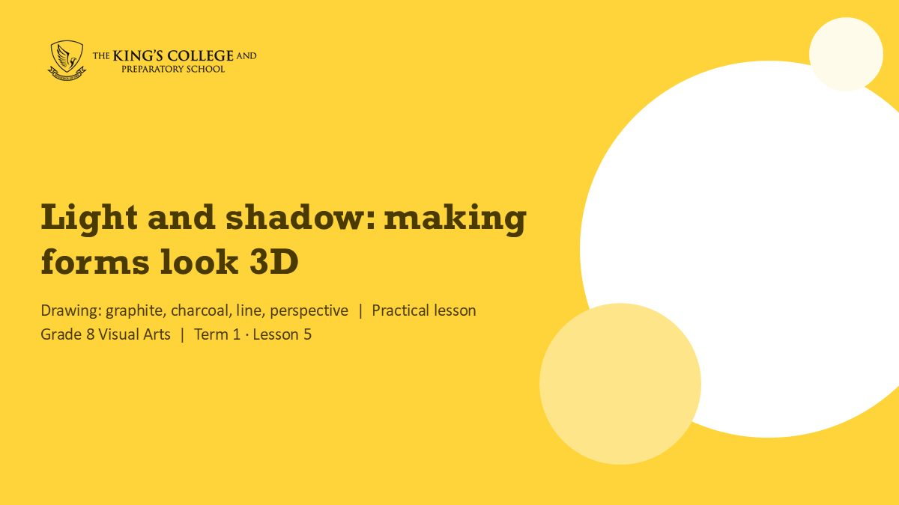

Term 1 · Lesson 5 · Practical lesson
Light and shadow: making forms look 3D
Start here
Today I will
- Today I will find the light source
- Today I will name the six parts of light and shadow
- Today I will shade a sphere and a cylinder so they look 3D
Think first
Watch the ball as I move the lamp. What happens to the shadows?
Words to know
- Form
- A shape that looks three-dimensional, with height, width and depth.
- Light source
- Where the light comes from, such as a window, the sun or a lamp.
- Highlight
- The brightest spot, where light hits the object most directly.
- Core shadow
- The darkest band on the object itself, on the side turned away from the light.
- Reflected light
- Soft light bounced back onto the shadow side from a nearby surface.
- Cast shadow
- The shadow the object throws onto the surface behind or beneath it.
Slides

Notes
Light source, highlight, mid-tone, core shadow, reflected light and cast shadow on a sphere, cube and cylinder.
Light and shadow on a sphere
- Highlight: Closest to the light: leave the paper white.
- Mid-tone: Most of the ball: a soft grey that gets darker away from the light.
- Core shadow: A dark band where the ball turns away from the light.
- Reflected light: A slightly lighter edge inside the shadow.
- Cast shadow: Darkest right under the ball, softer and lighter further away.
Sphere, cube and cylinder
| Form | How the tone changes |
|---|---|
| Sphere | Smooth, curved change in every direction around the highlight. |
| Cube | Each flat side has one even tone: light, middle and dark. |
| Cylinder | Bands of tone from top to bottom, light on one side, dark on the other. |
Remember
Find the light first: every shadow sits on the opposite side.
Practical
You need: Pencils (HB to 6B), eraser, blending stump, journal
Sphere and cylinder in light and shadow
- Draw a small arrow in the corner of your page to show where the light comes from.
- Draw a circle and lightly mark the highlight and the core shadow.
- Shade the sphere from light to dark, leaving the highlight white (about 15 minutes).
- Add the reflected light and the cast shadow.
- Draw a cylinder: two ellipses joined by straight sides.
- Shade it in vertical bands, light to dark, with the same light direction (about 20 minutes).
- Label the six parts on the sphere.
Test yourself
- Where is the highlight on an object?
- What is the difference between a core shadow and a cast shadow?
- Why is there a lighter edge inside the shadow?
Show answers
1. On the part closest to and facing the light. 2. The core shadow is on the object; the cast shadow falls on the surface around it. 3. Reflected light bounces back from the table or nearby surfaces.
Finished early?
Shade a cube
Today you shaded curved forms. Now try a form with flat sides.
- Draw a small cube in your visual journal.
- Draw an arrow to show where the light comes from.
- Give each flat side one even tone: light, middle and dark.
- Add a cast shadow on the side away from the light.